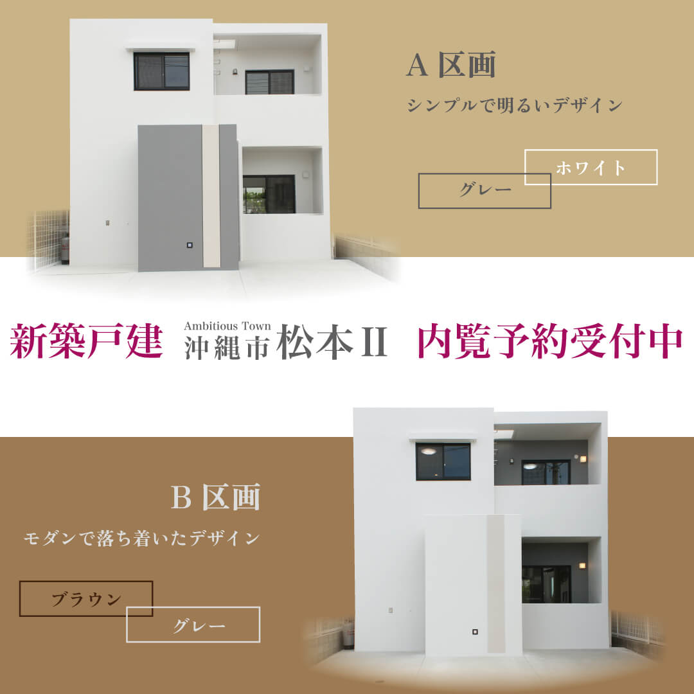
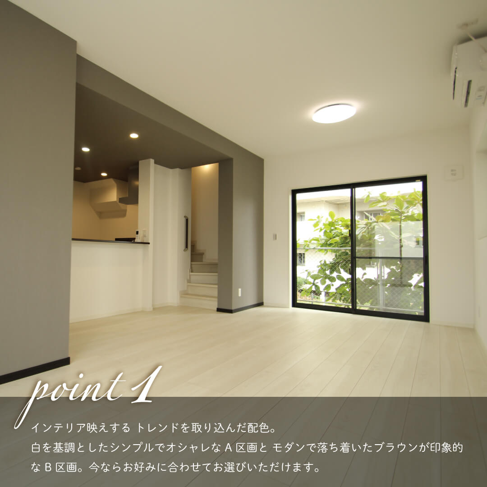
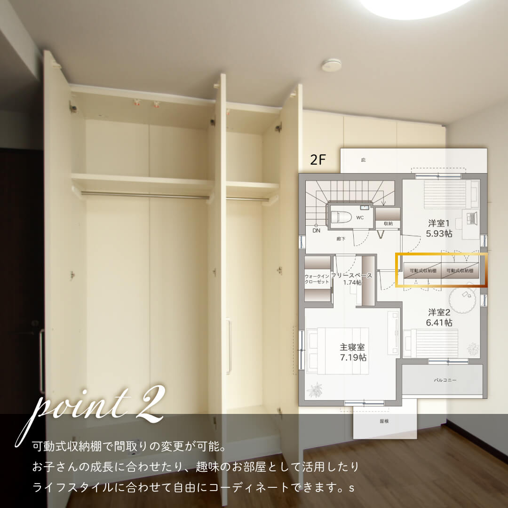
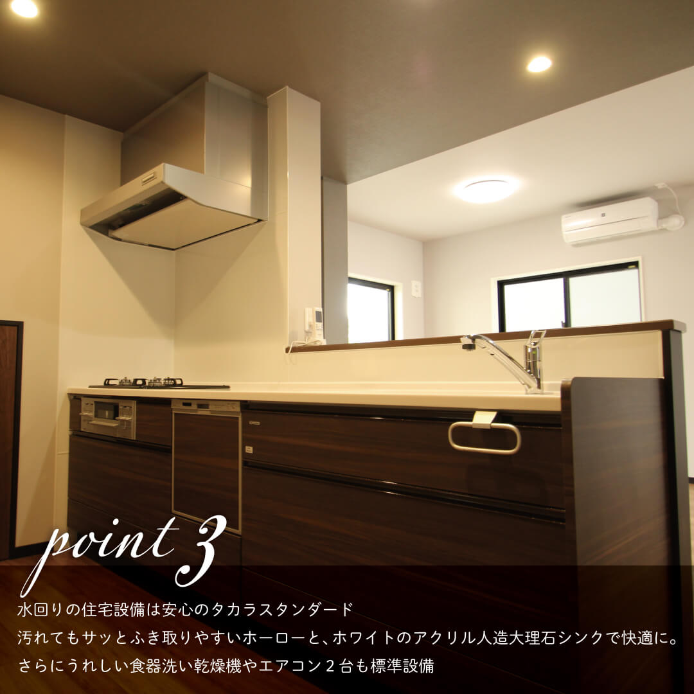

サイズ： 1080*1080(px)
Meta広告用（カルーセル広告）
トップに来る画像は外観を切り抜くことでシンプルかつ高級感のあるデザインに仕上げました。
2枚目以降は物件のPRポイントをあしらいを揃えて制作しました。
また、配信していた頃にInstagramでポイントを押さえて物件を紹介している投稿が多かったため、トレンドを取り入れながらデザインしました。
1枚目

2枚目

3枚目

4枚目
